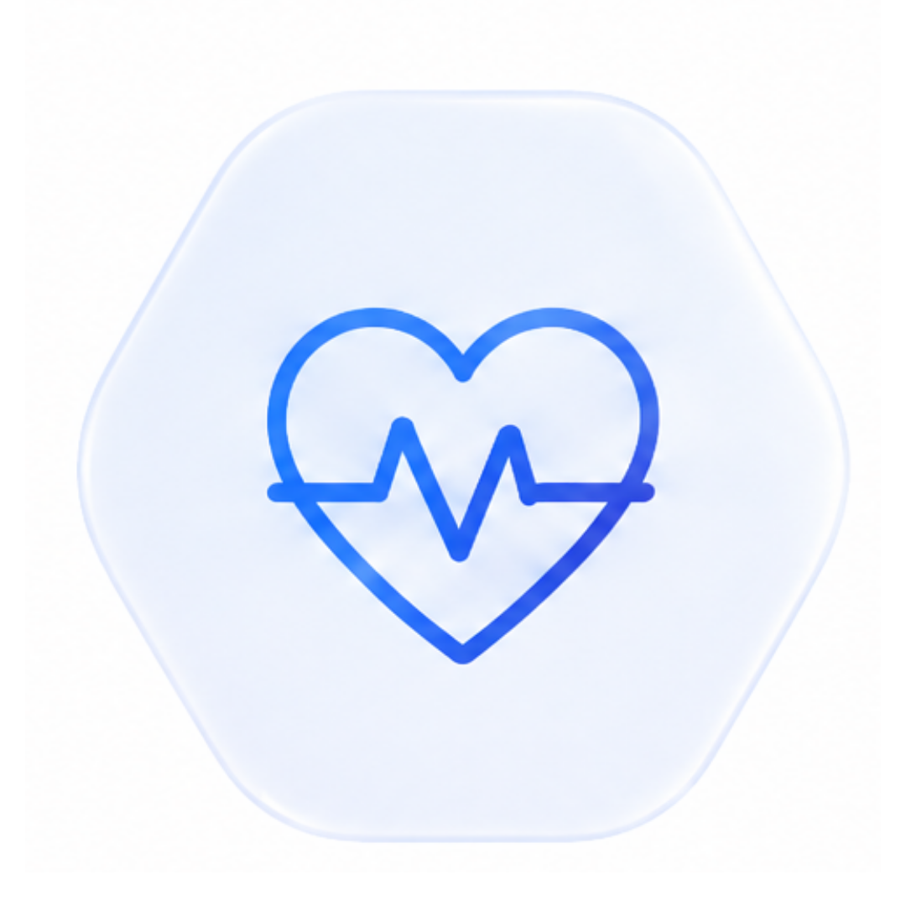
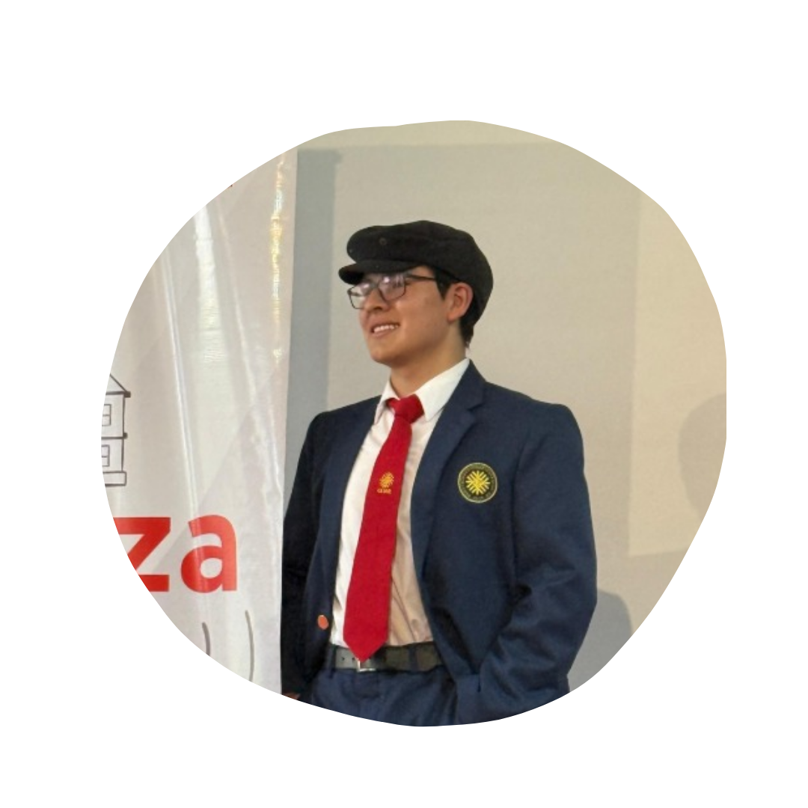

Premium comfort
designed to the patient's exact measurements.
RESPIRATORY CARE, REIMAGINED
WE MAKE EVERY
BREATH
EASIER
Affordable and sustainable CPAP solutions designed through recycled materials, personalized manufacturing and smart respiratory technology.
Comfortable fit
Fast support
Affordable care

Smart monitoring
Airflow and environmental data
MEET THE TEAM
The people behind Aerly PAP.
A multidisciplinary student team committed to making respiratory technology more accessible, sustainable and innovative.
TEAM MEMBER
Geraldine Dávila

TEAM MEMBER
Samady Sanchez
TEAM MEMBER
Wilmer Heredia
TEAM MEMBER
Leonardo De la Cruz
TEAM MEMBER
Cristiano Gonzales

TEAM MEMBER
Alexis Ospino
 WHO WE ARE
WHO WE ARE
OUR MISSION
To expand access to affordable CPAP masks, strengthen our presence as providers of accessible medical devices, and attract new users and healthcare professionals by increasing brand recognition and building long-term trust in our products and services.
 OUR FUTURE
OUR FUTURE
OUR VISION
To build an accessible, sustainable and technologically advanced respiratory-health ecosystem where no one is excluded from treatment due to cost or availability, while promoting innovation and supporting better healthcare outcomes for communities.
THE CHALLENGE
Respiratory care should be accessible to everyone.
Commercial CPAP masks can cost between S/320 and S/550, making respiratory therapy difficult to access for many Peruvian families.
Aerly PAP was created to explore a more affordable alternative through recycled materials, personalized digital design and 3D-printing technology.
Discover our process
COMMERCIAL MARKET RANGE
S/320–S/550
Approximate price range identified in the project’s market comparison.
OUR PROCESS
From recycled bottle to personalized mask.
Aerly PAP transforms recycled PET into 3D-printing filament and uses digital manufacturing to develop an affordable mask adapted to the user.
Collection
A post-consumer PET bottle is collected, thoroughly cleaned and disinfected.
Filament
The recycled plastic is processed and transformed into filament using a purpose-built extruder.
Digital Design
Facial measurements are used to model a personalized mask structure in Fusion 360.
3D Printing
The customized mask structure is manufactured through additive 3D-printing technology.
Final Assembly
Medical-grade silicone is added to improve comfort, skin contact and airtight sealing.
SMART TECHNOLOGY
More than a mask.
The Aerly PAP prototype combines personalized manufacturing with smart monitoring for a more controlled respiratory experience.
Airflow Monitoring
Sensors monitor the airflow supplied by the CPAP system during operation.
Temperature Control
The system records air-temperature variations to support a more comfortable experience.
Humidity Monitoring
Humidity data helps identify excessively dry conditions in the supplied airflow.
Integrated System
Arduino processes sensor readings, controls the motor and displays information on an LCD screen.
OUR PRODUCT
CPAP MASK

COMFORT MEETS INNOVATION
Personalized respiratory technology.
The Aerly PAP prototype combines a 3D-printed recycled PET structure with medical-grade silicone in the skin-contact areas. Its design focuses on comfort, adaptability and accessible production.
- Lightweight recycled PET structure
- Soft medical-grade silicone edges
- Personalized ergonomic design
- Adjustable support system
- Integrated environmental sensors
- Modular and repairable components
1 PET
BOTTLE
SUSTAINABILITY
Better breathing with less environmental impact.
Aerly PAP gives post-consumer PET a new purpose. Each donated bottle can provide approximately 11.5 meters of filament, enough to manufacture the structure of one prototype mask.
Recycled PET material
Optimized use of resources
Repairable modular design
Reduced plastic waste
PROTOTYPE IMPACT
Research translated into measurable results.
Initial project data demonstrate the potential economic, technological and environmental impact of the Aerly PAP prototype.
Estimated production cost of one prototype mask
Reported cost reduction compared with commercial alternatives
Participants included in the initial supervised pilot
Approximate recycled PET required for one prototype
Research, design, construction and testing
PRELIMINARY RESEARCH
INITIAL AVERAGE
87.36
FINAL AVERAGE
92.41
Promising results from an initial supervised test.
A supervised pilot involving 35 participants reported an average increase of approximately five points in the measured oxygen indicator. Most participants rated their experience as good, very good or excellent.
+5.05
AVERAGE INCREASE
Difference between the average measurements before and after prototype use.
These findings correspond to an educational prototype study. They do not replace professional medical evaluation, regulatory approval or formal clinical certification.
FREQUENTLY ASKED QUESTIONS
Questions about Aerly PAP
Learn more about the materials, manufacturing process and technology behind our prototype.
What material is the mask made from?
The prototype structure is manufactured using recycled PET filament. Medical-grade silicone is incorporated into the areas that come into contact with the skin.
Is every mask personalized?
The project proposes using facial measurements and Fusion 360 to adapt the mask structure to the characteristics of each user.
How does Aerly PAP reduce production costs?
Aerly PAP combines recycled raw materials, digital modeling and local 3D printing to reduce material and manufacturing expenses.
What does the smart system monitor?
The prototype integrates airflow, temperature and humidity sensors connected to an Arduino-based monitoring and control system.
Is Aerly PAP already medically certified?
Aerly PAP is currently presented as an educational and technological prototype. Additional professional testing and regulatory evaluation would be required before its use as a certified medical device.
RESPIRATORY INNOVATION
Join us in making every breath easier.
Discover an accessible and sustainable approach to respiratory-care technology.
CONTACT US